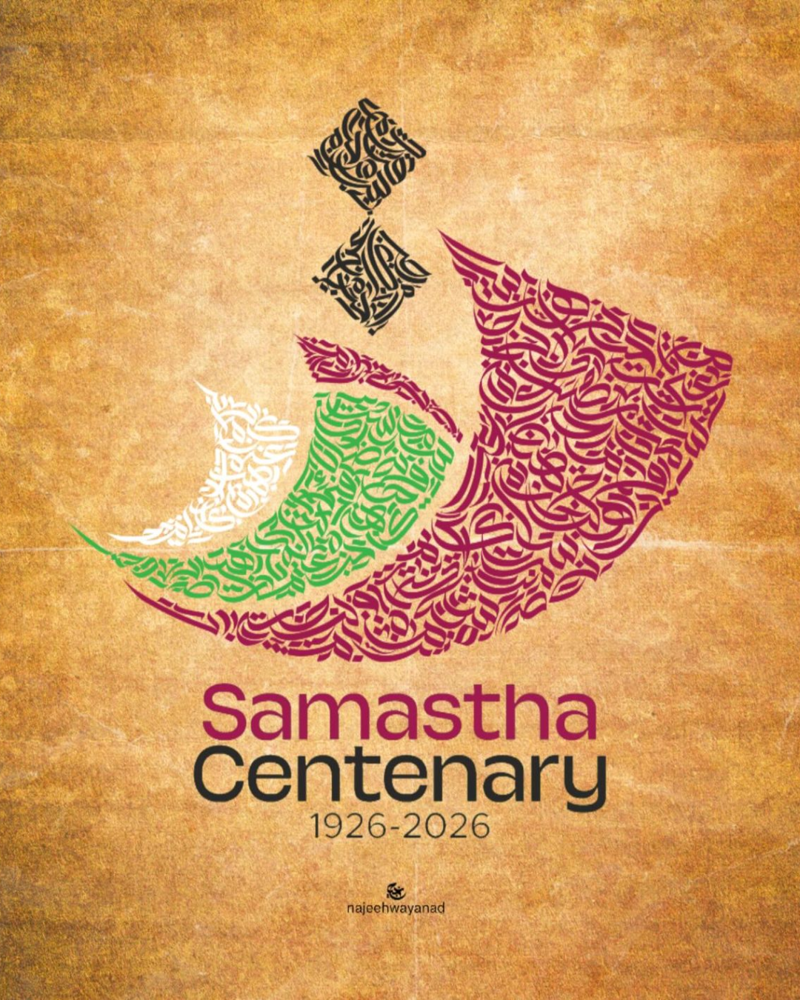

Gazva Insights
Thoughtful articles on Quran, Fiqh, and Islamic history.
Written in plain language, for readers who want depth.
From every category
A snapshot of what's new across Quran, Fiqh, history, and our writers' corner.

ഇസ്ലാമിക പഠനത്തിന്റെ നവയുഗം: സമസ്തയുടെ സമന്വയ ദൗത്യം
1945 മുതൽ സമസ്ത കേരള ജംഇയ്യത്തുൽ ഉലമ (സമസ്ത) വിദ്യാഭ്യാസ ശാക്തീകരണത്തിന് വലിയ പ്രാധാന്യം നൽകി വരുന്നു. പ്രസിദ്ധീകരണങ്ങളുടെ പുനരുജ്ജീവനം, മദ്രസ പ്രസ്ഥാനത്തിന് തുടക്കം കുറിക്കൽ, ഇസ് 1951-ൽ വ്യവസ്ഥാപിതവും ശാസ്ത്രീയവുമായ ഒരു മതവിദ്യാഭ്യാസ സമ്പ്രദായം അവതരിപ്പിച്ചുകൊണ്ട് സമസ്ത കേരളത്തിലെ മുസ്ലീം സമൂഹത്തിന്റെ ജീവിതത്തിൽ വലിയൊരു പരിവർത്തനത്തിന് വഴിയൊരുക്കി. ഇസ്ലാമിക തത്വങ്ങളിൽ അടിയുറച്ചുനിന്നുകൊണ്ട് തന്നെ, ഇസ്ലാമിക വിജ്ഞാന മേഖലകളിൽ മികവ് പ്രോത്സാഹിപ്പിക്കാൻ ഈ നൂതന സമീപനം ശ്രമിച്ചു. കാലഘട്ടത്തിന്റെ വികസിച്ചുകൊണ്ടിരിക്കുന്ന ആവശ്യകതകൾക്കനുസരിച്ച് ഈ സംവിധാനം നിരന്തരമായ മാറ്റങ്ങൾക്കും പരിഷ്കരണങ്ങൾക്കും വിധേയമായി.നിലവിൽ, മദ്രസകൾ എന്നറിയപ്പെടുന്ന പതിനൊന്നായിരത്തി എൺപതിലധികം (11,080+) പ്രാഥമിക വിദ്യാഭ്യാസ സ്ഥാപനങ്ങളുടെ വിശാലമായ ശൃംഖലയാണ് സമസ്തയുടെ കീഴിൽ പ്രവർത്തിക്കുന്നത്. ഈ സ്ഥാപനങ്ങളിൽ 12 ലക്ഷത്തിലധികം വിദ്യാർത്ഥികൾ വിദ്യാഭ്യാസം നേടുന്നു. S.K.I.M.V.B (സമസ്ത കേരള ഇസ്ലാം മത വിദ്യാഭ്യാസ ബോർഡ്) ഓഫീസിലെ മുഅല്ലിം സർവീസ് രജിസ്റ്ററിൽ ഔദ്യോഗികമായി ലിസ്റ്റ് ചെയ്ത ഒരു ലക്ഷത്തിലധികം അധ്യാപകരുടെ അർപ്പണബോധമുള്ള ഫാക്കൽറ്റിയാണ് ഈ മദ്രസകളെ മുന്നോട്ട് നയിക്കുന്നത്. ഇസ്ലാമിക വിദ്യാഭ്യാസ മേഖലയിലെ സമസ്തയുടെ സേവനങ്ങളുടെ ഒരു സുവർണ്ണ തൂവലാണ് ഈ ശക്തമായ പ്രസ്ഥാനം.

The structure of Surah Al-Kahf
Four stories, one thread — reading the surah as a unified response to trial.

The library that outlived an empire
How a single institution shaped centuries of scholarship.

Why we keep returning to the same questions
A short reflection on curiosity, doubt, and what keeps a reader coming back to first principles.

A poem for the quiet hour
Verses written between Maghrib and Isha.
A poem for the quiet hour
Verses written between Maghrib and Isha.
A poem for the quiet hour
Verses written between Maghrib and Isha.
A poem for the quiet hour
Verses written between Maghrib and Isha.